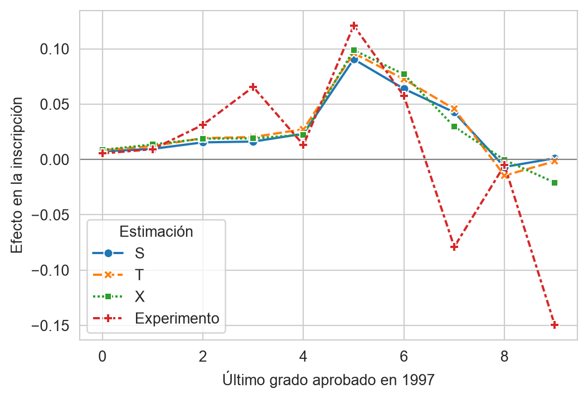

from sklearn.model_selection import GroupShuffleSplit, GroupKFold, KFold
from sklearn.model_selection import cross_val_predict
from sklearn.ensemble import RandomForestRegressor, RandomForestClassifier
from sklearn.linear_model import LinearRegression
from econml.dml import CausalForestDML, LinearDML
from matplotlib import pylab as plt
import numpy as np
import pandas as pd
import seaborn as sns
URL_DATOS = ('https://github.com/INGEOTEC/AprendizajeComputacional/'
'releases/download/datos-v1')17 Aprendizaje Computacional e Inferencia Causal
El objetivo de la unidad es conocer y aplicar modelos de aprendizaje computacional para estimar el efecto de una intervención y la manera en que ese efecto cambia entre personas.
Paquetes usados
17.1 Introducción
Hasta aquí el libro trató problemas de predicción, en los que interesa la predicción \(\hat y\) y qué tan cerca está del valor observado. Este capítulo regresa a la otra pregunta que se planteó en Sección 1.2, que es qué pasa con el resultado cuando se interviene, y que es la pregunta de la evaluación de programas. El capítulo de interpretabilidad (Capítulo 16) terminó señalando que ninguna técnica para interpretar un modelo la responde, porque esas técnicas describen lo que el modelo aprendió y no lo que ocurre cuando se cambia una variable.
Quien lee este capítulo ya conoce las herramientas de la inferencia causal, como los experimentos, el emparejamiento o las diferencias en diferencias, y el capítulo no las repite. Lo que agrega el aprendizaje computacional es flexibilidad en dos lugares, que son estimar cómo cambia el efecto de una persona a otra sin fijar de antemano los subgrupos y ajustar por muchas variables de control sin escoger a mano la forma funcional. Athey y Imbens (2019) y Athey (2019) presentan este programa de trabajo y su relación con la econometría.
La advertencia principal del capítulo es que el aprendizaje computacional no sustituye al diseño de investigación. Que la comparación entre tratados y no tratados sea válida depende de cómo se asignó el tratamiento, y ningún algoritmo corrige una asignación que favoreció a un grupo. Por eso el ejemplo del capítulo es un experimento, el de Progresa (Sección B.1.6), en el que la asignación fue al azar y la validez de la comparación no está en duda.
El capítulo empieza con la notación de resultados potenciales y con el efecto promedio del experimento de Progresa. Después muestra la diferencia entre predecir un resultado y estimar un efecto, y continúa con los meta-aprendices, que convierten cualquier algoritmo de aprendizaje supervisado en un estimador de efectos heterogéneos y permiten decidir a quién dirigir un programa según el efecto que se espera en cada persona. Después de los meta-aprendices se presentan los bosques causales (Sección 17.6), que adaptan el bosque aleatorio para estimar efectos y dan intervalos de confianza, y el aprendizaje computacional doble (Sección 17.7), que usa modelos flexibles para ajustar por variables de control cuando el tratamiento no se asignó al azar. El capítulo termina con los alcances y límites de estas herramientas (Sección 17.8).
17.2 Resultados Potenciales
En el marco de resultados potenciales cada persona tiene dos resultados, \(y(1)\) si recibe el tratamiento y \(y(0)\) si no lo recibe (Rubin 1974), y Imbens y Rubin (2015) es la referencia general de este marco. En Progresa el tratamiento es vivir en una localidad que recibió el programa en 1998 y el resultado es estar inscrito en la escuela en el otoño de ese año. La inscripción vale \(1\) cuando la persona está inscrita y \(0\) cuando no lo está, de manera que para una niña \(y(1) = 1\) quiere decir que se inscribiría si su localidad recibiera el programa y \(y(1) = 0\) que no se inscribiría ni siquiera con el programa. De la misma manera, \(y(0) = 1\) quiere decir que se inscribiría aunque su localidad no recibiera el programa y \(y(0) = 0\) que no se inscribiría sin él. Los dos resultados existen como posibilidades antes de que se asigne el tratamiento, aunque solo uno de ellos llegue a ocurrir.
El número entre paréntesis de \(y(1)\) y \(y(0)\) indica el tratamiento bajo el cual se pregunta por el resultado, sin importar cuál fue el tratamiento que la persona recibió, de manera que toda persona tiene los dos resultados, tanto la que vive en una localidad con el programa como la que vive en una de control. El tratamiento que cada persona recibió en la realidad es un dato distinto, que se denota con \(w \in \{0, 1\}\) y que vale \(1\) cuando su localidad recibió el programa y \(0\) cuando no lo recibió. La notación \(y(w)\) se lee entonces como el resultado que la persona tendría con el tratamiento \(w\), y el indicador \(w_i\) de la persona \(i\) sirve para señalar cuál de sus dos resultados potenciales es el que ocurrió y quedó en los datos. Esta \(w\) no tiene relación con los coeficientes \(\mathbf w\) de un modelo lineal usados en los capítulos anteriores. El efecto del tratamiento en la persona \(i\) es
\[ \tau_i = y_i(1) - y_i(0). \tag{17.1}\]
Cada persona tiene una de las cuatro combinaciones posibles de \(y_i(1)\) y \(y_i(0)\), y el efecto individual es la resta de esos dos valores. El efecto vale \(\tau_i = 1 - 0 = 1\) cuando la persona se inscribe con el programa y no se inscribe sin él, que es el caso en el que el programa hace que se inscriba. El efecto vale \(\tau_i = 1 - 1 = 0\) cuando la persona se inscribe con el programa y también sin él, y vale \(\tau_i = 0 - 0 = 0\) cuando no se inscribe en ninguno de los dos casos, de manera que en ambos el programa no cambia lo que la persona habría hecho. El efecto vale \(\tau_i = 0 - 1 = -1\) cuando la persona no se inscribe con el programa aunque sin él sí se habría inscrito, que es el caso en el que el programa la perjudica y que en un programa de becas se espera poco frecuente, pero que la definición no excluye. En Sección 17.3 se muestra qué se puede saber de estas cuatro combinaciones con los datos de Progresa.
De cada persona solo se observa uno de los dos resultados, el que corresponde al tratamiento que recibió, es decir,
\[ y_i = y_i(w_i) = w_i\, y_i(1) + (1 - w_i)\, y_i(0), \tag{17.2}\]
donde la primera igualdad dice que el resultado observado es el resultado potencial que corresponde al tratamiento que la persona recibió, y la segunda escribe lo mismo en una sola fórmula, porque \(w_i = 1\) anula el segundo término y deja \(y_i = y_i(1)\), mientras que \(w_i = 0\) anula el primero y deja \(y_i = y_i(0)\). El indicador \(w_i\) hace falta porque \(y_i(1)\) y \(y_i(0)\) describen lo que pasaría en cada caso y por sí solos no dicen cuál de los dos casos ocurrió. El resultado que no ocurrió se llama contrafactual y nunca se observa, de manera que tampoco se observa \(\tau_i\), y Holland (1986) lo llama el problema fundamental de la inferencia causal. La consecuencia para el aprendizaje computacional es directa, porque en predicción cada observación trae su respuesta \(y\) y el error del modelo se mide en un conjunto de prueba, mientras que aquí ninguna observación trae su \(\tau_i\) y por lo tanto no existe un conjunto de prueba con la respuesta correcta.
Lo que sí se puede estimar con los datos son promedios de los efectos individuales, donde la esperanza \(\mathbb E\) es el promedio sobre toda la población de interés, que en Progresa son las niñas y los niños de las localidades de la evaluación. El efecto promedio del tratamiento es
\[ \tau = \mathbb E[\tau_i] = \mathbb E[y(1) - y(0)] = \mathbb E[y(1)] - \mathbb E[y(0)], \tag{17.3}\]
donde la última igualdad se debe a que la esperanza de una diferencia es la diferencia de las esperanzas. Esa igualdad es la razón por la que un promedio de efectos sí se puede estimar aunque ningún efecto individual se observe, porque \(\mathbb E[y(1)]\) es el promedio del resultado si toda la población recibiera el tratamiento y \(\mathbb E[y(0)]\) es el promedio si nadie lo recibiera, y para estimar cada uno de esos dos promedios no hace falta ver los dos resultados de una misma persona. Basta con observar \(y(1)\) en un grupo de personas y \(y(0)\) en otro grupo, siempre que los dos grupos se parezcan a la población completa, y de esa condición tratan los supuestos que se presentan más adelante.
El efecto promedio condicional, que es el objeto central del capítulo, es el mismo promedio calculado solo entre las personas que comparten las características \(x\), esto es,
\[ \tau(x) = \mathbb E[y(1) - y(0) \mid x] = \mathbb E[y(1) \mid x] - \mathbb E[y(0) \mid x]. \tag{17.4}\]
La barra vertical se lee “dado \(x\)” e indica que el promedio se toma dentro del subgrupo que tiene esas características, por ejemplo las niñas de 12 años que aprobaron sexto grado y estaban inscritas en 1997. El efecto condicional \(\tau(x)\) dice cuánto cambia en promedio el resultado de las personas con características \(x\), y cuando \(\tau(x)\) no es constante se dice que el efecto es heterogéneo. El efecto promedio \(\tau\) de Ecuación 17.3 es a su vez el promedio de \(\tau(x)\) sobre todas las características que hay en la población, es decir, \(\tau = \mathbb E[\tau(x)]\), por lo que un mismo valor de \(\tau\) puede resultar de efectos condicionales muy distintos entre sí.
Ninguna de las dos esperanzas de Ecuación 17.4 se puede calcular directamente con los datos, porque \(\mathbb E[y(1) \mid x]\) es un promedio sobre todas las personas con características \(x\) y el resultado \(y(1)\) solo se observa en las que recibieron el tratamiento. Lo que los datos sí permiten calcular es el promedio del resultado observado en cada grupo, que se denota con \(\mu_w(x) = \mathbb E[y \mid x, w]\) y que es una función de regresión, la del grupo tratado cuando \(w = 1\) y la del grupo de control cuando \(w = 0\). Por Ecuación 17.2 el resultado observado de una persona tratada es \(y(1)\), de manera que \(\mu_1(x) = \mathbb E[y(1) \mid x, w = 1]\), que es el promedio de \(y(1)\) calculado únicamente entre las personas tratadas, y de la misma manera \(\mu_0(x) = \mathbb E[y(0) \mid x, w = 0]\) es el promedio de \(y(0)\) calculado únicamente entre las personas de control.
Como la inscripción solo vale \(0\) o \(1\), el promedio de \(y\) en un grupo es la proporción de personas inscritas en ese grupo, de manera que la función de regresión es una probabilidad, es decir,
\[ \mu_w(x) = \mathbb E[y \mid x, w] = \mathbb P(y = 1 \mid x, w). \tag{17.5}\]
Estimar \(\mu_w(x)\) es por lo tanto un problema de clasificación con dos clases, que son estar inscrito y no estarlo, como el de la probabilidad de pobreza de Sección 5.8.1, y se resuelve con un clasificador. Lo que se usa del clasificador es la probabilidad de la clase inscrito, porque el efecto condicional es la resta de dos probabilidades y la resta de dos clases predichas solo podría valer \(-1\), \(0\) o \(1\). En la literatura de inferencia causal a \(\mu_w(x)\) se le llama función de regresión, porque ese es el nombre que recibe la esperanza condicional \(\mathbb E[y \mid x]\) sin importar si \(y\) es continua o solo toma los valores \(0\) y \(1\), y el capítulo conserva ese nombre aunque los modelos que la estiman sean clasificadores.
El primero de los dos supuestos que hacen que el promedio entre las personas de un grupo coincida con el promedio entre todas es que, entre personas con las mismas características, el tratamiento no dependa de los resultados potenciales, lo que se conoce como independencia condicional y se escribe \((y(1), y(0)) \perp w \mid x\). Este supuesto dice que, cuando se comparan personas con las mismas características \(x\), saber si alguien recibió el tratamiento no da información sobre cuáles serían sus resultados, de manera que las personas tratadas no son, por ejemplo, las que de todos modos se habrían inscrito.
La propiedad que se usa es la definición de independencia entre dos variables aleatorias \(a\) y \(b\), que son independientes cuando conocer el valor de una no cambia la distribución de la otra, es decir, cuando \(\mathbb P(a \mid b) = \mathbb P(a)\). La independencia condicional es esa misma propiedad dentro del grupo de personas con características \(x\), de manera que \(\mathbb P(y(1) \mid x, w) = \mathbb P(y(1) \mid x)\) tanto para \(w = 1\) como para \(w = 0\), y lo mismo se cumple para \(y(0)\). Como la esperanza se calcula con la distribución, dos distribuciones iguales tienen la misma esperanza, y por lo tanto agregar \(w\) a la condición no cambia el promedio de ninguno de los dos resultados potenciales. De las cuatro igualdades que resultan, las dos que se usan más adelante son las que condicionan cada resultado potencial al grupo en el que ese resultado se observa, esto es,
\[ \mathbb E[y(1) \mid x, w = 1] = \mathbb E[y(1) \mid x] \quad \text{y} \quad \mathbb E[y(0) \mid x, w = 0] = \mathbb E[y(0) \mid x]. \tag{17.6}\]
El segundo supuesto es que toda persona tenga probabilidad positiva de recibir y de no recibir el tratamiento, lo que se conoce como traslape y se escribe \(0 < e(x) < 1\), donde \(e(x) = \mathbb P(w = 1 \mid x)\) es la probabilidad de tratamiento (propensity score). El traslape hace falta porque \(\mu_1(x)\) solo se puede calcular si hay personas tratadas con características \(x\) y \(\mu_0(x)\) solo si hay personas de control con esas características, y cuando falta alguno de los dos grupos no hay con quién comparar. En un experimento ambos supuestos se cumplen por diseño, porque el sorteo decide \(w\) sin mirar a las personas, mientras que en datos observacionales son supuestos que no se pueden verificar con los datos.
Con los dos supuestos el efecto condicional se obtiene en tres pasos, que son la definición de Ecuación 17.4, la independencia condicional de Ecuación 17.6 y la relación entre el resultado observado y el potencial de Ecuación 17.2, como se muestra a continuación:
\[ \begin{split} \tau(x) &= \mathbb E[y(1) \mid x] - \mathbb E[y(0) \mid x] \\ &= \mathbb E[y(1) \mid x, w = 1] - \mathbb E[y(0) \mid x, w = 0] \\ &= \mathbb E[y \mid x, w = 1] - \mathbb E[y \mid x, w = 0] \\ &= \mu_1(x) - \mu_0(x). \end{split} \tag{17.7}\]
El lado izquierdo de Ecuación 17.7 contiene resultados potenciales que nunca se observan completos y el lado derecho contiene solo cantidades que se calculan con los datos, y a este resultado se le llama identificación del efecto. Cuando la independencia condicional no se cumple la segunda igualdad deja de ser cierta, y entonces la diferencia \(\mu_1(x) - \mu_0(x)\) mezcla el efecto del tratamiento con las diferencias que ya había entre los dos grupos antes del tratamiento, lo que se conoce como sesgo de selección.
Las funciones \(\mu_1\) y \(\mu_0\) son probabilidades de clase como las que estiman los clasificadores de los capítulos anteriores y se pueden estimar con cualquiera de ellos, y en Sección 17.3 se estiman por primera vez con el procedimiento más simple, que es calcular una proporción por grupo. La dificultad es que un algoritmo que predice bien \(\mu_1\) y \(\mu_0\) por separado no necesariamente estima bien su diferencia, y de ese problema tratan los meta-aprendices (Sección 17.5).
17.3 El Experimento de Progresa
Progresa daba becas a los hogares pobres de localidades rurales a cambio de que sus hijas e hijos asistieran a la escuela, y el orden en que las localidades de la evaluación entraron al programa se sorteó, de manera que unas lo recibieron en 1998 y las de control hasta finales de 1999 (Sección B.1.6, Schultz (2004)). Las características de cada niña o niño son las medidas en 1997, antes del programa, y son el sexo, la edad, el último grado aprobado y la inscripción en ese año, como se muestra en el siguiente código:
progresa = pd.read_csv(f'{URL_DATOS}/progresa_inscripcion.csv')
VARS = ['mujer', 'edad', 'grado', 'inscrito_1997']
X = progresa[VARS].astype(float)
w = progresa['progresa'].to_numpy()
y = progresa['inscrito_1998'].to_numpy().astype(float)
loc = progresa['localidad'].to_numpy()El conjunto tiene \(14,996\) niñas y niños de \(491\) localidades, de las cuales \(308\) recibieron el programa en 1998 y \(183\) son de control, de manera que la proporción de niñas y niños en localidades tratadas es \(0.6260\).
Si el sorteo funcionó, las características previas al programa deben ser parecidas en los dos grupos, porque el azar no tiene preferencia por ningún tipo de localidad. La Tabla 17.1 muestra la media de cada característica en las localidades de control y en las que recibieron Progresa.
| Característica | Control | Progresa |
|---|---|---|
| Mujer | \(0.4923\) | \(0.4788\) |
| Edad | \(10.3525\) | \(10.3296\) |
| Último grado aprobado | \(3.4137\) | \(3.4407\) |
| Inscripción en 1997 | \(0.8561\) | \(0.8572\) |
En un experimento el efecto promedio (Ecuación 17.3) se estima con la diferencia entre la media del resultado de los tratados y la de los controles, donde \(N_1\) y \(N_0\) son el número de tratados y de controles, es decir,
\[ \hat \tau = \frac{1}{N_1} \sum_{i: w_i = 1} y_i - \frac{1}{N_0} \sum_{i: w_i = 0} y_i, \tag{17.8}\]
que se calcula con el siguiente código:
def dif_medias(y, w):
return y[w == 1].mean() - y[w == 0].mean()
ate = dif_medias(y, w)El sorteo fue por localidad, así que las niñas y niños de una misma localidad no son observaciones independientes y el error estándar debe calcularse remuestreando localidades completas y no personas. Se usa el bootstrap (Sección A.2) en el que cada muestra se forma eligiendo localidades con reemplazo y conservando a todas las personas de cada localidad elegida, como se muestra a continuación:
def bootstrap_localidades(y, w, loc, B=500, seed=0):
rng = np.random.default_rng(seed)
claves = np.unique(loc)
indices = [np.flatnonzero(loc == c) for c in claves]
salida = np.empty(B)
for b in range(B):
sel = rng.integers(0, len(claves), len(claves))
i = np.concatenate([indices[s] for s in sel])
salida[b] = dif_medias(y[i], w[i])
return salida
ate_b = bootstrap_localidades(y, w, loc)
ate_se = ate_b.std()
ate_ic = np.percentile(ate_b, [2.5, 97.5])La proporción inscrita en las localidades de control es \(0.8137\) y la diferencia de medias estima que el programa la cambia en \(0.0317\), con un error estándar de \(0.0116\) y un intervalo de confianza del 95% de \([0.0110, 0.0555]\). El error estándar que supone que las personas son observaciones independientes sería \(0.0064\), por lo que el error estándar por conglomerados es \(1.8\) veces el ingenuo y la incertidumbre es mayor de lo que sugeriría tratar a cada persona como un sorteo propio.
Las cuatro combinaciones de resultados potenciales de Sección 17.2 no se pueden contar en estos datos, porque de cada niña o niño solo se conoce el tratamiento de su localidad y el resultado que ocurrió. Lo que sí se puede contar son las cuatro combinaciones de tratamiento e inscripción observada, que se muestran en la Tabla 17.2.
| Localidad | No inscrito (\(y = 0\)) | Inscrito (\(y = 1\)) | Total |
|---|---|---|---|
| Control (\(w = 0\)) | \(1,045\) | \(4,563\) | \(5,608\) |
| Progresa (\(w = 1\)) | \(1,452\) | \(7,936\) | \(9,388\) |
Cada celda de la Tabla 17.2 es compatible con dos de las cuatro combinaciones de resultados potenciales, y los datos no permiten saber cuál de las dos corresponde a cada persona. Una niña inscrita en una localidad tratada tiene \(y(1) = 1\), y puede ser alguien a quien el programa hizo inscribirse, con \(y(0) = 0\) y efecto \(1\), o alguien que se habría inscrito de todos modos, con \(y(0) = 1\) y efecto \(0\). Un niño no inscrito en una localidad tratada tiene \(y(1) = 0\), y puede ser alguien que tampoco se habría inscrito sin el programa, con efecto \(0\), o alguien a quien el programa perjudicó, con \(y(0) = 1\) y efecto \(-1\). De la misma manera, una persona inscrita en una localidad de control tiene efecto \(0\) o \(-1\) y una no inscrita tiene efecto \(0\) o \(1\), según el valor de \(y(1)\) que no se observa.
La Tabla 17.2 también muestra que \(1,452\) niñas y niños de localidades tratadas, que son una proporción de \(0.1547\) de ese grupo, no estaban inscritos en 1998, lo que puede sorprender en un programa que da becas por asistir a la escuela. El programa condiciona la beca a la asistencia pero deja la decisión de inscribirse al hogar, y un hogar que no inscribe a su hija o hijo simplemente deja de recibir la beca que le correspondería. Para una persona adolescente que ya trabaja o ayuda en casa, el monto de la beca puede ser menor que lo que el hogar pierde si regresa a la escuela, y ese es el caso \(y(1) = 0\). El tratamiento \(w = 1\) es vivir en una localidad que recibió el programa, sin importar si el hogar cumplió la condición y cobró la beca, de manera que \(\hat \tau\) mide el efecto de ofrecer el programa, que en evaluación de programas se conoce como efecto de la intención de tratar.
La diferencia de medias tampoco dice cuántas personas tienen cada efecto, porque \(\tau\) es la proporción de personas con efecto \(1\) menos la proporción con efecto \(-1\), y las personas con efecto \(0\) no cambian ese promedio. Con las proporciones de la Tabla 17.2, y sin considerar la incertidumbre del muestreo, la proporción de personas con efecto \(-1\) puede ir de \(0.0000\) a \(0.1547\) y la proporción con efecto \(1\) de \(0.0317\) a \(0.1863\), y todos esos valores producen la misma diferencia de medias. Para afirmar que nadie tiene efecto \(-1\) hace falta suponer que la beca no hace que alguien deje la escuela, lo que se conoce como monotonicidad y que es razonable en este programa, pero que los datos no pueden comprobar.
Las funciones de regresión \(\mu_1(x)\) y \(\mu_0(x)\) de Ecuación 17.7 se pueden estimar sin ningún algoritmo cuando \(x\) es una sola característica con pocos valores, porque basta con calcular la proporción de inscritos en cada grupo. El siguiente código lo hace con el último grado aprobado, donde mu_grado tiene la proporción de inscritos en 1998 por grado en las localidades de control y en las de Progresa, y tau_grado es la diferencia entre las dos:
mu_grado = (progresa.groupby(['grado', 'progresa'])['inscrito_1998']
.mean().unstack())
tau_grado = mu_grado[1] - mu_grado[0]| Grado | Niñas y niños | Control, \(\hat\mu_0(x)\) | Progresa, \(\hat\mu_1(x)\) | Diferencia, \(\hat\tau(x)\) |
|---|---|---|---|---|
| \(0\) | \(1,629\) | \(0.9826\) | \(0.9879\) | \(0.0053\) |
| \(1\) | \(2,364\) | \(0.9668\) | \(0.9805\) | \(0.0137\) |
| \(2\) | \(2,053\) | \(0.9294\) | \(0.9480\) | \(0.0186\) |
| \(3\) | \(2,021\) | \(0.8963\) | \(0.9448\) | \(0.0486\) |
| \(4\) | \(1,781\) | \(0.9095\) | \(0.9241\) | \(0.0146\) |
| \(5\) | \(1,573\) | \(0.6878\) | \(0.7988\) | \(0.1110\) |
| \(6\) | \(2,249\) | \(0.3703\) | \(0.4672\) | \(0.0968\) |
| \(7\) | \(558\) | \(0.9676\) | \(0.9386\) | \(-0.0290\) |
| \(8\) | \(389\) | \(0.6730\) | \(0.6696\) | \(-0.0034\) |
| \(9\) | \(379\) | \(0.5414\) | \(0.4878\) | \(-0.0535\) |
Cada renglón de la Tabla 17.3 es una estimación de \(\mu_0(x)\), de \(\mu_1(x)\) y de \(\tau(x)\) cuando \(x\) es el último grado aprobado, y cada proporción es también la probabilidad estimada de inscribirse (Ecuación 17.5). La mayor diferencia está en quienes habían aprobado el grado \(5\), donde la proporción de inscritos pasa de \(0.6878\) en las localidades de control a \(0.7988\) en las de Progresa, y esa diferencia de \(0.1110\) es \(3.5\) veces el efecto promedio. En quienes habían aprobado el grado \(0\) la proporción de inscritos sin programa ya es \(0.9826\), por lo que el programa casi no tiene a quién cambiar.
Este procedimiento deja de funcionar cuando \(x\) tiene varias características, porque el número de grupos crece y cada grupo se queda con pocas personas, como ya ocurre aquí con el grado \(9\), que tiene \(379\) niñas y niños y una diferencia poco precisa. Un algoritmo de aprendizaje supervisado resuelve ese problema porque promedia entre personas parecidas en lugar de exigir que tengan exactamente las mismas características, y eso es lo que hacen los modelos de las secciones siguientes.
La Tabla 17.3 muestra que un efecto promedio como el de la diferencia de medias esconde diferencias grandes entre personas, y la pregunta del resto del capítulo es para quién es mayor el efecto del programa cuando se consideran todas las características a la vez.
17.4 Predecir no es Estimar un Efecto
Una reacción natural ante un presupuesto limitado es dirigir el programa a quienes tienen mayor riesgo de no inscribirse, lo que convierte la focalización en un problema de predicción como los de Sección 3.9 y Sección 5.8. Para revisar si esa idea funciona, los datos se dividen en un conjunto de entrenamiento y uno de prueba (Sección 2.2), pero la partición se hace por localidad, de manera que todas las niñas y niños de una localidad quedan en el mismo conjunto, por la misma razón que el bootstrap se hizo por localidad. El siguiente código hace la partición:
particion = GroupShuffleSplit(n_splits=1, test_size=0.3, random_state=0)
tr, te = next(particion.split(X, y, groups=loc))
T, G = X.iloc[tr], X.iloc[te]
y_t, y_g, w_t, w_g = y[tr], y[te], w[tr], w[te]El modelo de riesgo es un bosque aleatorio (Sección 11.4) entrenado solo con las localidades de control, porque el riesgo que interesa es el de no inscribirse cuando no hay programa, es decir, el modelo estima \(\mu_0(x)\). Como \(\mu_0(x)\) es la probabilidad de inscribirse (Ecuación 17.5), el bosque es de clasificación y lo que se usa de él es la probabilidad de la clase inscrito, que se obtiene con el método predict_proba, igual que en Sección 16.2. La función bosque_c fija los hiperparámetros del bosque de clasificación que se usa en todo el capítulo y la función prob regresa esa probabilidad, como se muestra en el siguiente código:
def bosque_c():
return RandomForestClassifier(n_estimators=200, min_samples_leaf=20,
n_jobs=-1, random_state=0)
def prob(modelo, X):
return modelo.predict_proba(X)[:, 1]
m0 = bosque_c().fit(T[w_t == 0], y_t[w_t == 0])
riesgo = 1 - prob(m0, G)Como el conjunto de prueba viene de un experimento, se puede medir el efecto del programa dentro de cualquier grupo de personas con la diferencia de medias de ese grupo. La función efecto_por_grupo lo hace, y se aplica a los quintiles del riesgo predicho en el conjunto de prueba:
def efecto_por_grupo(grupo, y, w):
filas = []
for g in np.unique(grupo):
m = grupo == g
filas.append(dict(grupo=g, n=int(m.sum()),
control=y[m & (w == 0)].mean(),
efecto=dif_medias(y[m], w[m])))
return pd.DataFrame(filas).set_index('grupo')
q_riesgo = pd.qcut(riesgo, 5, labels=False, duplicates='drop') + 1
ef_riesgo = efecto_por_grupo(q_riesgo, y_g, w_g)| Quintil de riesgo | Niñas y niños | Inscripción en control | Efecto |
|---|---|---|---|
| 1 | \(944\) | \(0.9942\) | \(0.0058\) |
| 2 | \(1043\) | \(0.9882\) | \(0.0054\) |
| 3 | \(780\) | \(0.9732\) | \(0.0039\) |
| 4 | \(909\) | \(0.8508\) | \(0.0377\) |
| 5 | \(892\) | \(0.3058\) | \(0.0212\) |
La Tabla 17.4 muestra que el modelo de riesgo ordena bien a las personas, porque la inscripción en las localidades de control cae hasta \(0.3058\) en el quintil de mayor riesgo, pero el efecto mayor no está ahí sino en el quintil 4, con un efecto de \(0.0377\) contra \(0.0212\) del quintil de mayor riesgo. En los quintiles de bajo riesgo casi todos se inscriben sin el programa y no hay nada que mejorar, mientras que en el de mayor riesgo están muchos jóvenes que ya habían dejado la escuela y a quienes una beca difícilmente regresa, de manera que el efecto tiende a concentrarse en quienes están por decidir si continúan. En términos de la notación, el riesgo es \(1 - \mu_0(x)\) y el efecto es \(\mu_1(x) - \mu_0(x)\), que son dos funciones distintas de \(x\), y por eso Kleinberg et al. (2015) distinguen los problemas de política que se resuelven con una predicción de los que requieren estimar un efecto causal.
17.5 Meta-aprendices
Se llama meta-aprendiz a un procedimiento que toma un algoritmo de aprendizaje supervisado cualquiera, llamado aprendiz base, y lo usa para estimar el efecto condicional \(\tau(x)\) (Künzel et al. 2019). En este capítulo el aprendiz base es el bosque de clasificación de la función bosque_c, y los tres meta-aprendices que se presentan se entrenan en el conjunto de entrenamiento \(\mathcal T\) y se evalúan en el conjunto de prueba \(\mathcal G\).
17.5.1 S-learner
El S-learner estima las dos funciones de regresión \(\mu_1(x)\) y \(\mu_0(x)\) con un solo modelo (single) que se entrena con todas las personas y recibe el tratamiento como una variable más. La función que ese modelo aproxima es la misma \(\mu_w(x) = \mathbb E[y \mid x, w]\) de Sección 17.2, y su estimación se escribe \(\hat\mu(x, w)\), con \(w\) entre los argumentos, para indicar que es un único modelo evaluado en los dos valores del tratamiento y para distinguirlo de los dos modelos \(\hat\mu_1\) y \(\hat\mu_0\) del T-learner. El efecto estimado es la diferencia entre la predicción con el tratamiento y sin él, es decir,
\[ \hat\tau_S(x) = \hat\mu(x, 1) - \hat\mu(x, 0). \tag{17.9}\]
La debilidad de este método es que el tratamiento es una variable entre varias y, si predice poco comparado con las demás, el algoritmo la usa poco o la ignora, de manera que el efecto estimado se sesga hacia cero. El siguiente código entrena el S-learner y estima el efecto en el conjunto de prueba:
T_w = T.assign(progresa=w_t)
s_modelo = bosque_c().fit(T_w, y_t)
tau_s = (prob(s_modelo, G.assign(progresa=1))
- prob(s_modelo, G.assign(progresa=0)))17.5.2 T-learner
El T-learner usa dos modelos (two), \(\hat\mu_1\) entrenado con los tratados y \(\hat\mu_0\) entrenado con los controles, y estima el efecto con
\[ \hat\tau_T(x) = \hat\mu_1(x) - \hat\mu_0(x), \tag{17.10}\]
que es la Ecuación 17.7 con las funciones estimadas. El modelo \(\hat\mu_0\) es el modelo m0 que ya se entrenó para el riesgo. La debilidad de este método es que cada modelo se ajusta para predecir bien su propio grupo, con su propio error, y la diferencia de dos predicciones ruidosas es más ruidosa que cada una, por lo que puede encontrar heterogeneidad donde solo hay ruido. El siguiente código completa el T-learner:
m1 = bosque_c().fit(T[w_t == 1], y_t[w_t == 1])
tau_t = prob(m1, G) - prob(m0, G)17.5.3 X-learner
El X-learner empieza igual que el T-learner, entrenando \(\hat\mu_0\) y \(\hat\mu_1\), y después imputa a cada persona el resultado potencial que no se observó para calcular con él un efecto individual, que para los tratados y para los controles es
\[ d_i^1 = y_i - \hat\mu_0(x_i), \qquad d_i^0 = \hat\mu_1(x_i) - y_i. \tag{17.11}\]
Con esos efectos imputados se entrena un modelo \(\hat\tau_1\) sobre \(d^1\) con los tratados y otro \(\hat\tau_0\) sobre \(d^0\) con los controles, y por último los dos se combinan con
\[ \hat\tau_X(x) = e\,\hat\tau_0(x) + (1 - e)\,\hat\tau_1(x), \tag{17.12}\]
donde \(e\) es la proporción de tratados. La ventaja de este método es que los modelos de la segunda etapa aprenden directamente el efecto y no un resultado, y que aprovecha mejor los datos cuando un grupo es mucho mayor que el otro. Los efectos imputados ya no valen \(0\) o \(1\), porque son la resta de un resultado y una probabilidad y toman valores entre \(-1\) y \(1\), de manera que predecirlos es un problema de regresión y los modelos \(\hat\tau_1\) y \(\hat\tau_0\) son bosques de regresión, que se definen en la función bosque con los mismos hiperparámetros que bosque_c. El siguiente código implementa el X-learner:
def bosque():
return RandomForestRegressor(n_estimators=200, min_samples_leaf=20,
n_jobs=-1, random_state=0)
d1 = y_t[w_t == 1] - prob(m0, T[w_t == 1])
d0 = prob(m1, T[w_t == 0]) - y_t[w_t == 0]
tau1 = bosque().fit(T[w_t == 1], d1)
tau0 = bosque().fit(T[w_t == 0], d0)
e = w_t.mean()
tau_x = e * tau0.predict(G) + (1 - e) * tau1.predict(G)Los efectos estimados por los tres meta-aprendices se guardan en un diccionario para analizarlos juntos:
taus = dict(S=tau_s, T=tau_t, X=tau_x)El promedio de los efectos estimados en el conjunto de prueba es \(0.0298\) con el S-learner, \(0.0336\) con el T-learner y \(0.0331\) con el X-learner, y la diferencia de medias del experimento en ese mismo conjunto es \(0.0238\). El promedio de los efectos individuales estimados debe parecerse al efecto promedio, porque el efecto promedio es el promedio de \(\tau(x)\) sobre la población. La desviación estándar de los efectos estimados es \(0.0498\), \(0.0609\) y \(0.0584\), respectivamente, e indica cuánta heterogeneidad encuentra cada método.
17.5.4 Evaluación sin Observar el Efecto
Con un meta-aprendiz no se puede calcular un error como en el capítulo de rendimiento (Capítulo 2), porque el efecto individual \(\tau_i\) no se observa. Lo que sí permite el experimento es comprobar si el ordenamiento es correcto, formando grupos según el efecto estimado y midiendo en cada grupo el efecto con la diferencia de medias, de manera que si el meta-aprendiz ordena bien el efecto medido crece de un grupo al siguiente. El siguiente código lo hace con los cuartiles del efecto estimado por cada meta-aprendiz:
ef_cuartil = {k: efecto_por_grupo(pd.qcut(v, 4, labels=False,
duplicates='drop') + 1,
y_g, w_g)
for k, v in taus.items()}| Cuartil del efecto estimado | S-learner | T-learner | X-learner |
|---|---|---|---|
| 1 | \(-0.0151\) | \(-0.0351\) | \(-0.0106\) |
| 2 | \(0.0199\) | \(0.0272\) | \(-0.0054\) |
| 3 | \(0.0191\) | \(0.0274\) | \(0.0176\) |
| 4 | \(0.0677\) | \(0.0724\) | \(0.0813\) |
La Tabla 17.5 muestra que en el cuartil de mayor efecto estimado el efecto medido es \(0.0677\), \(0.0724\) y \(0.0813\) con el S-learner, el T-learner y el X-learner, respectivamente, que son mayores que la diferencia de medias de todo el conjunto de prueba, y el menor de los tres equivale a \(2.8\) veces esa diferencia. En el cuartil de menor efecto estimado los efectos medidos son \(-0.0151\), \(-0.0351\) y \(-0.0106\), que son menores que esa diferencia de medias. Cada cuartil tiene al menos \(1051\) observaciones de las \(148\) localidades del conjunto de prueba, y el error estándar de estas diferencias de medias, calculado con el bootstrap por localidad, va de \(0.0182\) a \(0.0502\), por lo que no conviene leer las diferencias pequeñas entre métodos como evidencia de que uno ordena mejor que otro.
Otra forma de revisar los efectos estimados es compararlos contra una variable que la literatura identifica como decisiva, y Schultz (2004) encontró que el efecto de Progresa en la inscripción se concentra en la transición de la primaria a la secundaria. La Figura 17.1 compara, por último grado aprobado, el promedio del efecto estimado por cada meta-aprendiz con la diferencia de medias del experimento en el conjunto de prueba.
Código
df = pd.DataFrame(taus).assign(grado=G['grado'].to_numpy())
df = df.groupby('grado').mean()
df['Experimento'] = efecto_por_grupo(G['grado'].to_numpy(), y_g, w_g)['efecto']
df = df.reset_index().melt(id_vars='grado', var_name='Estimación',
value_name='efecto')
fig, ax = plt.subplots(figsize=(6, 4))
_ = sns.lineplot(df, x='grado', y='efecto', hue='Estimación',
style='Estimación', markers=True, ax=ax)
_ = ax.axhline(0, color='gray', linewidth=0.8)
_ = ax.set(xlabel='Último grado aprobado en 1997',
ylabel='Efecto en la inscripción')
En la Figura 17.1, los tres meta-aprendices tienen su mayor efecto estimado en quienes habían aprobado el grado 5, es decir, quienes en 1998 debían decidir si terminaban la primaria o entraban a la secundaria, con un efecto promedio estimado de hasta \(0.0988\), mientras que en los grados 0 a 4 el promedio del efecto estimado no pasa de \(0.0273\). Los meta-aprendices encuentran ese patrón sin que se les indique dónde buscar, y la diferencia de medias del experimento en el grado \(5\) es \(0.1210\). La línea del experimento es más errática que las de los modelos porque cada punto es una diferencia de medias calculada con pocas observaciones, en particular en los grados 7 a 9, que tienen a lo más \(176\) niñas y niños cada uno, mientras que los modelos comparten información entre grados vecinos y suavizan el efecto.
17.5.5 Focalizar por Riesgo o por Efecto
Con estos efectos estimados se puede regresar al problema de política que se planteó en Sección 17.4. Con presupuesto para una cuarta parte de las niñas y niños (Sección 5.8.4), se compara elegir a quienes tienen mayor riesgo predicho contra elegir a quienes tienen mayor efecto estimado, y en ambos casos se mide con el experimento el efecto entre los elegidos y entre los no elegidos, como se muestra en el siguiente código:
def efecto_seleccion(puntaje, y, w, proporcion=0.25):
sel = puntaje >= np.quantile(puntaje, 1 - proporcion)
return dif_medias(y[sel], w[sel]), dif_medias(y[~sel], w[~sel])
ef_sel = {k: efecto_seleccion(v, y_g, w_g)
for k, v in dict(Riesgo=riesgo, **taus).items()}| Criterio de selección | Efecto en los elegidos | Efecto en el resto |
|---|---|---|
| Mayor riesgo predicho | \(0.0395\) | \(0.0111\) |
| Mayor efecto, S-learner | \(0.0626\) | \(0.0089\) |
| Mayor efecto, T-learner | \(0.0716\) | \(0.0069\) |
| Mayor efecto, X-learner | \(0.0740\) | \(0.0032\) |
La Tabla 17.6 muestra que entre los elegidos por el efecto estimado con el X-learner el programa cambia la inscripción en \(0.0740\), que es mayor que el \(0.0395\) de los elegidos por riesgo, con una razón de \(1.9\) entre ambos. La correlación entre el riesgo predicho y el efecto estimado con el X-learner es \(0.3935\), de manera que los dos criterios eligen a grupos de personas en buena parte distintos y, con el mismo presupuesto, el criterio cambia cuántas inscripciones adicionales logra el programa.
Elegir por efecto estimado maximiza el resultado medido del programa, pero ese no es el único objetivo legítimo de una política pública. Un programa puede querer atender a quienes están peor aunque el efecto en ellos sea menor, y esa es una decisión de quien define la política, igual que la de los costos de cada error en Sección 5.8. Además, estos efectos se refieren a un solo resultado, la inscripción en 1998, y un programa de transferencias tiene otros resultados, como la salud, la nutrición o el consumo de los hogares, en los que el orden de las personas podría ser diferente.
17.6 Bosques Causales
Los meta-aprendices usan algoritmos diseñados para predecir \(y\), y lo único que cambia en un árbol causal (Athey y Imbens 2016) es la función de costo con la que se eligen los cortes, porque el resto del procedimiento es el del árbol de decisión de Capítulo 10. En ese capítulo se vio que el árbol aplica en cada nodo una función de corte \(x_j \leq a\), y que la variable \(x_j\) y el valor \(a\) se eligen para minimizar el costo de los dos hijos, que en regresión es la suma de sus varianzas ponderadas por la proporción de observaciones que recibe cada uno (Sección 10.3.2). Minimizar ese costo equivale a maximizar
\[ G_y(x_j, a) = p \, (1 - p) \, (\bar y_{\text{izq}} - \bar y_{\text{der}})^2, \tag{17.13}\]
donde \(p\) es la proporción de las observaciones del nodo que van al hijo izquierdo, y \(\bar y_{\text{izq}}\) y \(\bar y_{\text{der}}\) son los promedios de \(y\) en el hijo izquierdo y en el derecho. Esta cantidad es lo que baja la varianza con el corte, de manera que el árbol de regresión busca los dos hijos cuyos promedios de \(y\) sean lo más distintos posible. El árbol causal usa la misma expresión con el efecto en el lugar del promedio, es decir, maximiza
\[ G_\tau(x_j, a) = p \, (1 - p) \, (\hat\tau_{\text{izq}} - \hat\tau_{\text{der}})^2, \tag{17.14}\]
donde \(\hat\tau_{\text{izq}}\) y \(\hat\tau_{\text{der}}\) son las diferencias de medias de Ecuación 17.8 calculadas con los tratados y los controles de cada hijo. El árbol causal busca entonces los dos hijos cuyos efectos sean lo más distintos posible, sin importar si la inscripción es alta o baja en ellos, y una vez construido estima el efecto de una persona con la diferencia de medias de la hoja en la que cae. La función cortes calcula cualquiera de las dos cantidades para todos los cortes posibles de la raíz, donde el parámetro valor es la función que se evalúa en cada hijo, que es el promedio de \(y\) para el corte de predicción y la diferencia de medias para el corte causal, como se muestra en el siguiente código:
def cortes(X, valor):
filas = []
for var in X.columns:
for a in np.unique(X[var])[:-1]:
izq = (X[var] <= a).to_numpy()
p = izq.mean()
v_izq, v_der = valor(izq), valor(~izq)
filas.append(dict(variable=var, a=a, izq=v_izq, der=v_der,
G=p * (1 - p) * (v_izq - v_der) ** 2))
return pd.DataFrame(filas)
corte_y = cortes(X, lambda m: y[m].mean())
corte_tau = cortes(X, lambda m: dif_medias(y[m], w[m]))
mejor_y = corte_y.loc[corte_y['G'].idxmax()]
mejor_tau = corte_tau.loc[corte_tau['G'].idxmax()]El corte que elegiría un árbol de regresión en la raíz es inscrito_1997 \(\leq\) \(0\), que deja en el hijo izquierdo una proporción de inscritos en 1998 de \(0.1750\) y en el derecho una de \(0.9436\). El corte que elegiría un árbol causal es edad \(\leq\) \(10\), que deja en el hijo izquierdo un efecto de \(0.0059\) y en el derecho uno de \(0.0561\). Las dos funciones de costo eligen variables distintas, porque la variable que mejor predice la inscripción no es la que mejor separa a las personas según lo que el programa cambia en ellas, y en los dos hijos del corte de predicción el efecto es \(0.0581\) y \(0.0263\). El árbol causal repite esta búsqueda en cada hijo hasta que las hojas tienen pocas observaciones, igual que el árbol de decisión.
Se dice que un árbol causal es honesto cuando usa una parte de los datos para decidir los cortes y otra parte distinta para estimar el efecto dentro de las hojas. Si se usaran los mismos datos, el árbol buscaría las hojas donde por azar la diferencia de medias es grande y la estimación quedaría sesgada, de la misma manera que el error medido en el conjunto de entrenamiento es optimista. La honestidad es lo que permite construir intervalos de confianza para el efecto estimado.
Un bosque causal (Wager y Athey 2018) promedia muchos árboles causales honestos construidos con submuestras, como un bosque aleatorio promedia árboles de decisión (Sección 11.4, Breiman (2001)). El bosque se puede leer como un método de vecinos cercanos (Capítulo 7), porque para estimar \(\tau(x)\) pondera a las observaciones según cuántas veces caen en la misma hoja que \(x\), de manera que son los datos los que deciden en qué características deben parecerse dos personas para considerarse vecinas. El emparejamiento tradicional fija esa distancia de antemano y se deteriora cuando hay muchas características. Athey et al. (2019) generalizan la idea, y esa versión es la que implementa la librería econml (Battocchi et al. 2019).
La clase CausalForestDML de econml primero descuenta de \(y\) y de \(w\) lo que se predice con \(x\), usando los modelos model_y y model_t (la idea se explica en Sección 17.7), y después construye el bosque causal. El modelo model_y estima \(\mathbb E[y \mid x]\) y el modelo model_t estima la probabilidad de tratamiento \(e(x) = \mathbb P(w = 1 \mid x)\), y como la inscripción y el tratamiento solo valen \(0\) o \(1\) las dos cantidades son probabilidades de clase y los dos modelos son el bosque de clasificación de la función bosque_c. Los parámetros discrete_outcome=True y discrete_treatment=True le indican a la librería que el resultado y el tratamiento son categorías, y entonces toma de cada modelo la probabilidad con predict_proba.
Los bosques que se pasan en model_y y model_t son bosques aleatorios comunes que solo sirven para ese primer paso, de manera que ninguno de sus árboles es un árbol causal. Los árboles causales son los que CausalForestDML construye internamente en el segundo paso, cuyo número y tamaño de hoja se fijan con los parámetros n_estimators=1000 y min_samples_leaf=20 de la propia clase, y que eligen sus cortes con el resultado y el tratamiento ya descontados. El criterio de corte se indica con el parámetro criterion, donde el valor 'het' corresponde a Ecuación 17.14 y el valor por omisión, 'mse', da además más peso a los hijos que tienen tanto tratados como controles, porque en ellos el efecto se estima con más precisión.
Los parámetros cv=GroupKFold(5) y groups=loc hacen que esas predicciones se calculen sin usar a la propia localidad, y el bosque se entrena con todos los datos porque la honestidad ya separa internamente los datos de cada árbol, como se muestra en el siguiente código:
causal = CausalForestDML(model_y=bosque_c(), model_t=bosque_c(),
discrete_outcome=True, discrete_treatment=True,
cv=GroupKFold(5), n_estimators=1000,
min_samples_leaf=20, random_state=0)
_ = causal.fit(y, w, X=X, groups=loc)
tau_bc = causal.effect(X).ravel()El promedio de los efectos estimados por el bosque causal es \(0.0311\), que difiere en \(0.0006\) del efecto promedio de \(0.0317\) estimado con la diferencia de medias, y su desviación estándar es \(0.0566\). En el conjunto de prueba la correlación de los efectos del bosque con los del X-learner es \(0.9454\) y con los del T-learner es \(0.8817\), lo que indica qué tanto se parece su ordenamiento de las personas al de los meta-aprendices, aunque en esta comparación hay que tener presente que el bosque causal se entrenó también con las observaciones de \(\mathcal G\).
La ventaja del bosque causal sobre los meta-aprendices es que da un intervalo de confianza para el efecto condicional \(\tau(x)\) de un perfil de persona. Para verlo se construyen perfiles de una niña y un niño por cada grado de 0 a 8, con la edad típica de ese grado e inscritos en 1997, y se calcula el intervalo de cada uno con el siguiente código:
perfiles = pd.DataFrame([dict(mujer=m, edad=g + 7, grado=g, inscrito_1997=1)
for m in (0, 1) for g in range(9)]).astype(float)
inf = causal.effect_inference(perfiles).summary_frame(alpha=0.05)
perfiles_ef = perfiles.assign(efecto=inf['point_estimate'].to_numpy(),
inferior=inf['ci_lower'].to_numpy(),
superior=inf['ci_upper'].to_numpy())Código
fig, ax = plt.subplots(figsize=(6, 4))
for m, nombre in [(0, 'Niños'), (1, 'Niñas')]:
p = perfiles_ef[perfiles_ef.mujer == m]
_ = ax.plot(p.grado, p.efecto, marker='o', label=nombre)
_ = ax.fill_between(p.grado, p.inferior, p.superior, alpha=0.2)
_ = ax.axhline(0, color='gray', linewidth=0.8)
_ = ax.legend()
_ = ax.set(xlabel='Último grado aprobado en 1997',
ylabel='Efecto en la inscripción')
La Figura 17.2 muestra que el perfil con mayor efecto estimado es una niña con grado \(6\), con un efecto de \(0.0950\) y un intervalo de confianza de \([-0.0370, 0.2270]\) que incluye al cero, y que de los \(18\) perfiles hay \(1\) cuyo intervalo queda completamente arriba de cero. El bosque coincide con los meta-aprendices en que el efecto se concentra alrededor del final de la primaria, y a la vez muestra que para un perfil individual la incertidumbre es grande, con intervalos de un ancho promedio de \(0.1292\), algo que los meta-aprendices no dicen. El atributo feature_importances_ indica qué variables usó el bosque para separar a las personas con efectos distintos, y la de mayor importancia es edad, con \(0.6237\). Esta importancia se refiere a la heterogeneidad del efecto y no a la predicción de \(y\), a diferencia de la importancia de variables de Sección 16.3.
Los intervalos de econml suponen que las observaciones son independientes, y como aquí el sorteo fue por localidad, los intervalos correctos serían todavía más anchos. Además, examinar muchos perfiles y quedarse con los que resultan significativos es un problema de pruebas múltiples, que es justamente lo que estudian Lee y Shaikh (2014) con estos mismos datos.
17.7 Aprendizaje Computacional Doble (Double Machine Learning)
Hasta aquí el tratamiento se asignó al azar, pero cuando no es así los tratados y los no tratados difieren en características que también afectan el resultado y hay que ajustar por ellas. En econometría el ajuste se hace agregando controles a una regresión (Sección 3.3), lo que obliga a escoger qué controles se incluyen y con qué forma funcional. El aprendizaje computacional doble (double/debiased machine learning, DML) de Chernozhukov et al. (2018) deja esa tarea a un algoritmo flexible sin perder la inferencia sobre el efecto.
17.7.1 Modelo Parcialmente Lineal
El aprendizaje computacional doble parte del modelo parcialmente lineal, que se escribe como
\[ y = \theta w + g(x) + \epsilon, \qquad w = m(x) + \nu, \tag{17.15}\]
donde \(\theta\) es el efecto del tratamiento, \(g\) y \(m\) son funciones desconocidas de los controles, \(\mathbb E[\epsilon \mid x, w] = 0\) y \(\mathbb E[\nu \mid x] = 0\). La función \(m(x)\) es la probabilidad de tratamiento \(e(x)\) de Sección 17.2, y hay confusión cuando una misma característica aparece en \(g\) y en \(m\), porque entonces mueve al mismo tiempo el tratamiento y el resultado.
Robinson (1988) mostró que, si se toma la esperanza condicional en \(x\) de la primera ecuación y se resta, con \(\ell(x) = \mathbb E[y \mid x]\), se obtiene
\[ y - \ell(x) = \theta \, (w - m(x)) + \epsilon, \tag{17.16}\]
de manera que \(\theta\) es el coeficiente de una regresión del residuo de \(y\) contra el residuo de \(w\), es decir,
\[ \hat\theta = \frac{\sum_i \hat r^w_i \, \hat r^y_i}{\sum_i (\hat r^w_i)^2}, \qquad \hat r^y_i = y_i - \hat\ell(x_i), \quad \hat r^w_i = w_i - \hat m(x_i). \tag{17.17}\]
Quien estudió econometría reconocerá en este resultado el teorema de Frisch-Waugh-Lovell, según el cual en una regresión lineal el coeficiente de \(w\) se obtiene igual si primero se quita de \(y\) y de \(w\) lo que explican los controles. El aprendizaje computacional doble sigue esa misma receta, en la que \(\hat\ell\) y \(\hat m\) son modelos de aprendizaje computacional en lugar de regresiones lineales. De ahí viene el nombre doble, porque se resuelven dos problemas de predicción, que son predecir \(y\) con \(x\) y predecir \(w\) con \(x\), y en esas tareas los algoritmos del libro son buenos.
Ajustar un solo modelo no es suficiente, porque si solo se ajustara \(y\) con un modelo flexible que incluye a \(w\), como el S-learner (Sección 17.5.1), la regularización que evita el sobreajuste sesgaría \(\hat\theta\). Es el mismo problema que tiene elegir controles con un solo Lasso (Sección 3.8), para el que Belloni et al. (2014) propusieron seleccionar los controles que predicen \(y\) y también los que predicen \(w\). La Ecuación 17.17 tiene la propiedad de que un error pequeño en \(\hat\ell\) o en \(\hat m\) afecta poco a \(\hat\theta\), porque lo que entra en el sesgo es el producto de los dos errores.
17.7.2 Sobreajuste Cruzado
El segundo ingrediente del método es que el residuo de cada observación se calcule con modelos que no la vieron al entrenarse, porque un modelo flexible predice demasiado bien sus propios datos de entrenamiento y sus residuos serían artificialmente pequeños. Se usa validación cruzada de \(K\) iteraciones (Sección 2.5.1), en la que los datos se dividen en \(K\) partes y la predicción de cada parte se hace con modelos entrenados en las otras, y a esto se le llama sobreajuste cruzado (cross-fitting). El error estándar de \(\hat\theta\) se calcula con \(\psi_i = \hat r^w_i (\hat r^y_i - \hat\theta \hat r^w_i)\) como
\[ \text{se}(\hat\theta) = \frac{\sqrt{\sum_i \psi_i^2}}{\sum_i (\hat r^w_i)^2}, \tag{17.18}\]
y cuando hay conglomerados las \(\psi_i\) se suman primero dentro de cada conglomerado y la partición se hace por conglomerado. La función dml implementa el procedimiento para el caso de este capítulo, en el que el resultado y el tratamiento valen \(0\) o \(1\), de manera que \(\hat\ell\) y \(\hat m\) son las probabilidades que da el bosque de clasificación de la función bosque_c, como se muestra en el siguiente código:
def dml(X, w, y, grupos=None, K=5):
if grupos is None:
cv = list(KFold(K, shuffle=True, random_state=0).split(X))
else:
cv = list(GroupKFold(K).split(X, groups=grupos))
r_y = y - cross_val_predict(bosque_c(), X, y, cv=cv,
method='predict_proba')[:, 1]
r_w = w - cross_val_predict(bosque_c(), X, w, cv=cv,
method='predict_proba')[:, 1]
theta = (r_w * r_y).sum() / (r_w ** 2).sum()
psi = r_w * (r_y - theta * r_w)
if grupos is not None:
psi = pd.Series(psi).groupby(grupos).sum().to_numpy()
se = np.sqrt((psi ** 2).sum()) / (r_w ** 2).sum()
return theta, se17.7.3 Ejercicio Semi-sintético
Para ver qué corrige el aprendizaje computacional doble se necesita un caso con confusión y con el efecto verdadero conocido, y eso solo existe en una simulación. Por eso se construye un ejercicio semi-sintético en el que las personas y sus características son las de las localidades de control de Progresa, donde nadie recibió el programa, y sobre ellas se simulan un tratamiento ficticio y sus dos resultados potenciales. El resultado sin tratamiento, \(y(0)\), es la inscripción observada en 1998, y el resultado con tratamiento, \(y(1)\), es igual salvo que el 30% de quienes no se inscribieron, elegidos al azar, sí lo hacen. Como aquí se conocen los dos resultados potenciales de cada persona, el efecto promedio verdadero se calcula directamente. El tratamiento no se sortea por igual, porque lo recibe con probabilidad \(0.8\) quien no estaba inscrito en 1997, con probabilidad \(0.6\) quien había aprobado quinto o sexto y con probabilidad \(0.2\) el resto, como haría un programa que busca a quienes tienen más riesgo. El siguiente código construye el ejercicio:
control = progresa[progresa['progresa'] == 0].reset_index(drop=True)
X_c = control[VARS].astype(float)
rng = np.random.default_rng(0)
y0 = control['inscrito_1998'].to_numpy().astype(float)
y1 = np.where((y0 == 0) & (rng.random(len(y0)) < 0.3), 1.0, y0)
p = np.where(control['inscrito_1997'] == 0, 0.8,
np.where(control['grado'].between(5, 6), 0.6, 0.2))
w_s = (rng.random(len(y0)) < p).astype(float)
y_s = np.where(w_s == 1, y1, y0)
efecto_real = (y1 - y0).mean()Se comparan tres estimadores del efecto promedio, que son la diferencia de medias, una regresión lineal del resultado en el tratamiento y los controles, y el aprendizaje computacional doble, como se muestra en el siguiente código:
ingenuo = dif_medias(y_s, w_s)
lineal = LinearRegression().fit(np.c_[w_s, X_c], y_s).coef_[0]
theta_s, se_s = dml(X_c, w_s, y_s)| Procedimiento | Efecto estimado |
|---|---|
| Efecto verdadero | \(0.0585\) |
| Diferencia de medias | \(-0.1669\) |
| Regresión lineal con controles | \(0.0262\) |
| Aprendizaje computacional doble | \(0.0506\) |
La Tabla 17.7 muestra que, con una proporción de tratados de \(0.3488\), la diferencia de medias es \(-0.1669\), de signo contrario al verdadero, porque los tratados se eligieron entre quienes tenían más riesgo y se inscriben menos con o sin tratamiento. La regresión lineal con controles da \(0.0262\), ya que corrige parte de la confusión pero supone que los controles entran de forma lineal, mientras que aquí la inscripción depende del grado y de la edad de manera no lineal. El aprendizaje computacional doble da \(0.0506\) con error estándar \(0.0085\), más cerca del valor verdadero \(0.0585\) que la regresión lineal, y el valor verdadero queda dentro de su intervalo de confianza del 95%. Cuando el efecto no es igual para todos, como en este ejercicio, el modelo parcialmente lineal estima un promedio ponderado de los efectos que no coincide exactamente con el efecto promedio, y esa es otra razón de la diferencia que queda.
El ejercicio funciona porque todas las características que determinan el tratamiento ficticio están entre los controles. Con datos reales esa condición es un supuesto, la independencia condicional de Sección 17.2, y el aprendizaje computacional doble no lo vuelve cierto, de manera que si falta un confusor el método estima con mucha precisión una cantidad equivocada.
17.7.4 Progresa
Al aplicar la función dml al experimento real no hay confusión que corregir, así que el resultado debe parecerse a la diferencia de medias, y ajustar por las características previas puede además reducir el error estándar porque explican buena parte de la variación de la inscripción. Se pasa grupos=loc para respetar el sorteo por localidad, como se muestra en el siguiente código:
theta, se = dml(X, w.astype(float), y, grupos=loc)La librería econml implementa el mismo estimador en la clase LinearDML, en la que los controles se pasan en el parámetro W y X=None indica que se busca un efecto constante, como se muestra a continuación:
lineal_dml = LinearDML(model_y=bosque_c(), model_t=bosque_c(),
discrete_outcome=True, discrete_treatment=True,
cv=GroupKFold(5), random_state=0)
_ = lineal_dml.fit(y, w, X=None, W=X, groups=loc)
theta_e = lineal_dml.ate().item()
ic_e = [v.item() for v in lineal_dml.ate_interval(alpha=0.05)]dml y con LinearDML de la librería econml.
| Procedimiento | Efecto | Error estándar |
|---|---|---|
| Diferencia de medias (bootstrap por localidad) | \(0.0317\) | \(0.0116\) |
Función dml (por localidad) |
\(0.0316\) | \(0.0067\) |
LinearDML de econml |
\(0.0316\) | \(0.0041\) |
Las tres estimaciones del efecto en la Tabla 17.8 difieren entre sí en a lo más \(0.0000\), como debe ocurrir en un experimento, en el que ajustar por características previas no cambia lo que se estima. El error estándar de la función dml es menor que el de la diferencia de medias, y el de LinearDML es el más pequeño de los tres, pero ese valor no toma en cuenta que el sorteo fue por localidad, porque la librería supone observaciones independientes, que es la misma advertencia que se hizo con los intervalos del bosque causal.
17.8 Alcances y Límites
Las herramientas de este capítulo sirven para estimar un efecto una vez que el diseño permite identificarlo, y la validez de la comparación viene del diseño, que puede ser un sorteo o un supuesto como la independencia condicional. Un modelo más flexible describe mejor los datos, pero no convierte una correlación en un efecto, y Imbens y Rubin (2015) es la referencia para discutir esos supuestos.
El supuesto de traslape importa más con modelos flexibles, porque donde casi todos o casi nadie recibe el tratamiento no hay con quién comparar y un bosque extrapola sin avisar. Por eso conviene revisar la distribución de la probabilidad de tratamiento estimada antes de leer cualquier efecto.
Buscar subgrupos con efectos grandes equivale a examinar muchas hipótesis a la vez. Los meta-aprendices y los bosques hacen esa búsqueda de manera disciplinada, pero un subgrupo encontrado así debe confirmarse en datos que no se usaron para encontrarlo, como se hizo con el conjunto de prueba en Sección 17.5.4, o corregirse por pruebas múltiples (Lee y Shaikh 2014).
Los errores estándar deben respetar la manera en que se asignó el tratamiento. En este capítulo el sorteo fue por localidad y el error estándar por conglomerados fue \(1.8\) veces el que supone independencia, y las librerías no hacen ese ajuste por omisión. En un documento de política pública (policy paper) reportar el diseño, los supuestos y la incertidumbre forma parte de la estimación, porque es lo que permite a quien decide saber cuánto confiar en el efecto.
TipActividad
Repetir el análisis de Sección 17.5 con inscrito_1999 como resultado, que mide la inscripción un año y medio después del inicio del programa. Calcular el efecto promedio con su error estándar por conglomerados, entrenar el T-learner y el X-learner y dibujar el promedio del efecto estimado por grado aprobado en 1997. Discutir si los grados con mayor efecto son los mismos que en 1998 y por qué podrían recorrerse, considerando que las mismas personas son un año mayores.
TipActividad
Con inscrito_1999 como resultado, estimar el efecto promedio con la función dml usando grupos=loc y compararlo con la diferencia de medias. Entrenar un CausalForestDML con ese resultado, dibujar la figura de perfiles por grado y discutir si los intervalos de confianza permiten afirmar que el efecto es distinto entre niñas y niños.
17.9 Resumen
Los resultados potenciales definen el efecto individual de un tratamiento como la diferencia entre el resultado con tratamiento y sin él, y como de cada persona solo se observa uno de los dos, el efecto individual nunca se observa y lo que se estima son promedios, que son el efecto promedio y el efecto condicional \(\tau(x)\). En un experimento el efecto promedio se estima con una diferencia de medias, y su error estándar debe respetar la unidad que se sorteó, que en Progresa fue la localidad y no la persona.
Predecir un resultado y estimar un efecto son tareas distintas, porque el riesgo depende de \(\mu_0(x)\) y el efecto de la diferencia \(\mu_1(x) - \mu_0(x)\). Quienes tienen mayor riesgo de no inscribirse no son necesariamente quienes más responden a una beca, y por eso focalizar un programa con uno u otro criterio lleva a resultados distintos.
Los meta-aprendices convierten un algoritmo de aprendizaje supervisado en un estimador de \(\tau(x)\). El S-learner usa un solo modelo con el tratamiento como variable, el T-learner usa un modelo por grupo y el X-learner modela directamente los efectos imputados a cada persona. Como el efecto individual no se observa, los meta-aprendices no se evalúan con un error de predicción sino comprobando, con los datos de un experimento, que los grupos con mayor efecto estimado tienen también mayor efecto medido.
El bosque causal construye árboles honestos que separan a las personas según su efecto en lugar de según su resultado, y se puede leer como un método de vecinos cercanos con una distancia aprendida de los datos. A diferencia de los meta-aprendices, da intervalos de confianza para el efecto de un perfil, y esos intervalos suelen ser anchos.
El aprendizaje computacional doble estima el efecto de un tratamiento ajustando por controles con modelos flexibles. Predice el resultado y el tratamiento con los controles, calcula los residuos con sobreajuste cruzado y hace una regresión de residuo contra residuo, de manera que corrige el sesgo de una regresión mal especificada, pero no el de un confusor que falta.
Ninguna de estas herramientas sustituye al diseño de investigación, porque el aprendizaje computacional aporta flexibilidad para describir cómo cambia un efecto y para ajustar por controles, mientras que la credibilidad de la estimación sigue viniendo de cómo se asignó el tratamiento. Con este capítulo el libro cierra el recorrido que se planteó en Sección 1.2, de la predicción de un resultado a la pregunta de qué pasa cuando se interviene.